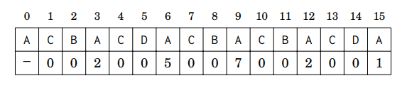
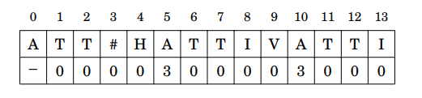

Los problemas de String no son tan comunes como los grafos o la programación dinamica, pero es indispensable manejar los algoritmos y estructuras de datos para el procesamiento de String, ya que puede ser la herramienta para resolver un problema que otros equipos no logran resolver.
Java provee dos maneras de manejar cadenas de texto: String y StringBuilder (o StringBuffer).
Comparativa entre String y StringBuilder en ejecución:
TestHay ciertos problemas de String que no requieren el uso de algoritmos o estructuras de datos complejas para el manejo de String, tan solo hay que idear una manera correcta y eficiente de hacer lo que pide el problema.
Para este tipo de problemas es muy importante tener un buen manejo del lenguaje de programación y conocer metodos que faciliten la codificación.
Algunos tipos de problemas de manipulación de String clasicos son:
Algunos ejemplos de métodos utiles de StringBuilder son:
Definición: "El Arreglo-Z de un String s de largo n contiene para cada i = 0, 1, ..., n-1 el largo de el substring más largo de s que inicia en la posición i y es un prefijo de s." (Laaksonen, A. Competitive Programmer’s Handbook).
Dado un String s retorna un arreglo z donde z[i] es igual al mayor numero de caracteres desde s[i] que coinciden con los caracteres desde s[0].
Por ejemplo, el Arreglo-Z de ACBACDACBACBACDA es:
La Función-Z construye eficientemente el Arreglo-Z en O(n). El algoritmo calcula los valores de izquierda a derecha usando información antes guardada en el Arreglo-Z y comparando substring caracter por caracter.
Es el problema fundamental en el procesamiento de String:
Dado un Texto t y un Patrón p, el problema es: Buscar todas las ocurrencias del patrón p en el texto t.
Podemos resolver este problema eficientemente usando la Función-Z creando un nuevo String s = p + '#' + t, donde '#' puede ser cualquier caracter que no aparezca en t ni en p.
Computamos la Función-Z para s. Hacemos n = t.length( ) y m = p.length( ).
Para todo i en el rango [m+1, m+1+n) donde z[i] sea igual a m sabemos que hay una ocurrencia de p en t, en la posición i-m-1.
Por ejemplo, si t = HATTIVATTI y p = ATT, el Arreglo-Z de s = p + '#' + t es:
El código de Z-Function se encuentra disponible en el repositorio en Github: